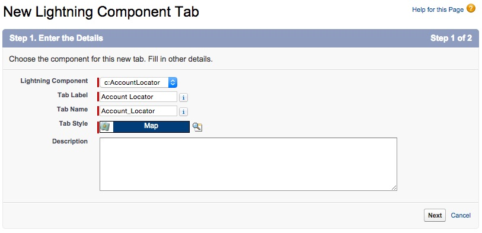
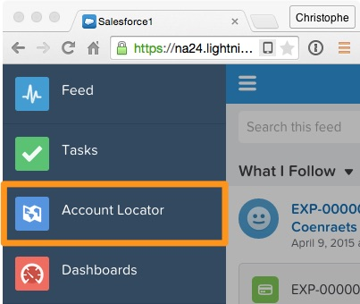
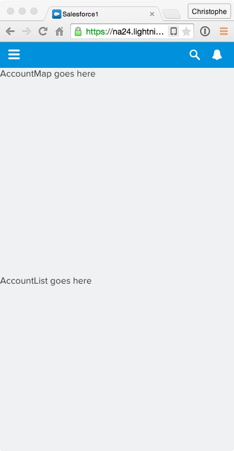

In this module, you create the skeleton for the AccountLocator Lightning Component, and you test it in the Salesforce1 application.
In the Developer Console, click File > New > Lightning Component. Specify AccountLocator as the bundle name and click Submit.
Implement the component as follows:
<aura:component implements="force:appHostable">
<div>
<div>AccountMap goes here</div>
<div>AccountList goes here</div>
</div>
</aura:component>
force:appHostable interface to indicate that it can run in the Salesforce1 application.Click STYLE (upper right corner), and implement the component style as follows:
.THIS {
position:absolute;
height: 100%;
width: 100%;
}
.THIS>div {
height: 50%;
}
.THIS refers to the root level div tag..THIS>div refers to the divs that are immediate children of the root div. There are two of them in this component, and we split the component height evenly between them.Click File > Save to save the file.
In Setup, click Create > Tabs.
In the Lightning Component Tabs section, click New.

Click Next and Save.
In Setup, Select Administer > Mobile Administration > Mobile Navigation:

In Salesforce, modify the URL as follows:

This starts the Salesforce1 Application simulator.
Click the menu button in the upper left corner.
Select Account Locator in the menu.

Preview the component.
